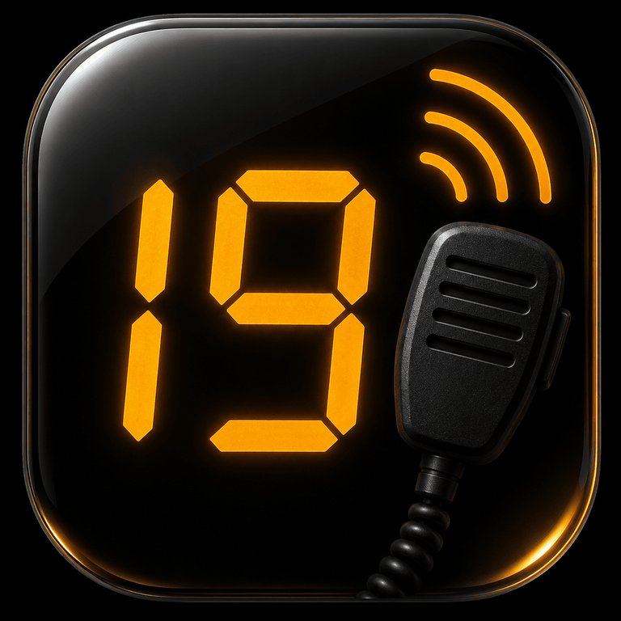

Questions about channels, 10-codes, or anything else — we're here to help.

Channels · 10-Codes · Slang · Quick Reference
iOS · DahVio StudiosDrag left or right on the tuning dial to scroll through all 40 CB channels. Release and the dial snaps to the nearest channel with a satisfying animation. You can also tap the left or right neighbor channel shown below the dial to jump directly to an adjacent channel.
On the 10-Codes tab, tap the star icon on the right side of any code tile to toggle it starred. Starred codes are highlighted with an amber border. Your starred codes are saved and persist between sessions.
Badge labels identify channels with special designations. EMERGENCY means the channel is FCC-reserved for emergency use only (Channel 9). MAIN is the primary trucker channel (Channel 19). REGIONAL, N/S HWY, OFF-ROAD, MARINE/RV, WALKIE, and SSB badges indicate other common usage patterns.
Yes, completely. CB Radio – Trucker's Handbook works fully offline. No internet connection is ever required. All channels, codes, slang, and quick reference content is stored locally on your device.
Channels 36–40 are SSB-capable (Single Sideband), a transmission mode that provides greater range than standard AM. SSB requires a radio with SSB capability — most basic CB radios only support AM mode. These channels show an SSB badge in the app.
No. Channel 9 is reserved by FCC regulation for emergency communications only. Using it for non-emergency traffic is a violation of FCC rules. Channel 19 is the correct channel for general trucker communication on interstates.
Refunds are handled by Apple. Visit reportaproblem.apple.com to submit a refund request directly through the App Store.
Please email ray@dahvio.com with the specific channel, code, or term and what you believe is incorrect. All content is sourced from official FCC and standard CB radio references, but corrections are always welcome.
Found a content error, have a feature request, or need help with something not covered above? Send a message and we'll get back to you promptly.
ray@dahvio.com